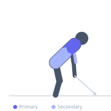
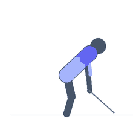

Exercise guide / Single-Arm Cable High Row with Rotation
Single-Arm Cable High Row with Rotation
The single-arm cable high row with rotation pulls from a high cable pulley with one hand while adding a torso rotation at peak contraction toward the working side. The rotation engages the obliques and thoracic rotators alongside the standard lat and upper back muscles, training the pulling pattern in a more athletically functional context that mirrors rotational sport movements.
Primary muscles
latissimus dorsi
deltoid posterior
Secondary muscles
biceps brachii
rectus abdominis
Stabilizers
erector spinae
Equipment
Cable Machine (High Pulley)


Starting position
- Stand side-on to a high cable pulley. Grasp the handle with the near hand, arm extended upward toward the pulley. Feet staggered or parallel at shoulder width.
Setup
- Set the cable to the highest available position. Stand far enough from the stack to achieve full arm extension at the starting position.
Steps
- Step 1: Begin with arm extended toward the high pulley.
- Step 2: Pull the cable handle toward the hip or lower ribcage, driving the elbow down.
- Step 3: At peak contraction, rotate the torso toward the working side.
- Step 4: Hold 1 second at peak rotation.
- Step 5: Reverse the motion — unwind the torso then return the arm — to full extension.
Coaching cues
- Pull first, then rotate
- Drive the elbow to the hip before the torso turns
- Control the reverse sequence on the way back
Breathing
- Exhale on the pull and rotation. Inhale on the return.
Range of motion
- Full arm extension to full torso rotation at peak contraction.
Tempo
- 2-1-2-0
Common mistakes
- Rotating before the pull completes — the row and rotation should sequence, not co-occur
- Using momentum from the rotation to assist the pull — the lat should drive the pull
Safety
- Thoracic rotation under load can stress spinal structures — keep loads moderate
- Avoid if experiencing thoracic or lumbar spine pain
Training
- strength: 8–12 reps
- strength: 3–4 sets
- Rest: {'strength': 90}